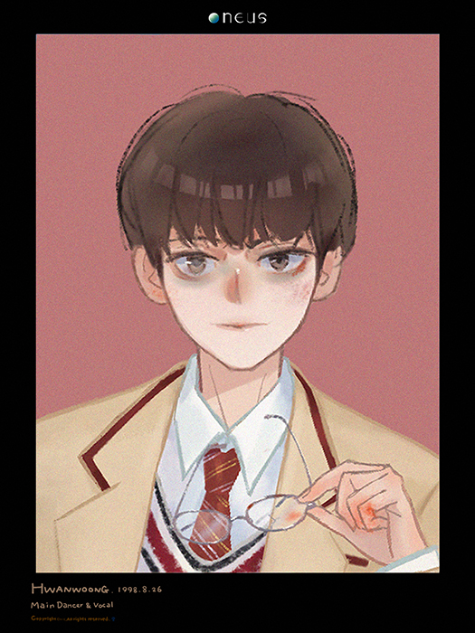

Hwanwoong

여환웅 (呂煥雄) / Hwan-woong
生日：1998年8月26日
国籍：大韩民国
学历：
Earth school （就读中）
兴趣爱好：荡秋千，看电影
特长：Urban，rocking，Waacking等街舞，跆拳道，寻找优点
家庭状况：父母
别名：웅이小雄, 요정妖精, 땅콩花生, 나무늘보树懒, 왕자님王子, 아기 호랑이老虎宝宝
TMI
1. 是以舞蹈特长生的身份进入高中的，在高中时期是舞蹈社的重要成员，
擅长各种风格的舞蹈，最初学的是女团舞，经常被指导老师夸奖是努力的舞蹈天才。
2. 初中的时候由于对自己的舞蹈水平过于自信，所以有很长一段时间都沉迷在当年的小游戏中，
游戏机玩的很多但是是游戏黑洞，最终导致升入高中时还是戴上了眼镜，每次跳舞都觉得相当不方便。
3. 进入高中后因长相好、成绩好、舞蹈也很漂亮，成功吸引了许多女生的欢迎，
本人却对恋爱似乎非常迟钝。但这让高中的小混混盯上了他，并逐渐从语言攻击变为肢体冲突，
直到被李抒澔制止、团体解散才停止校园暴力。
4. 在学姐毕业后担任舞蹈社社长，时常与音乐社合作，
创造出许多被奉为校园传奇的音乐作品和表演现场。